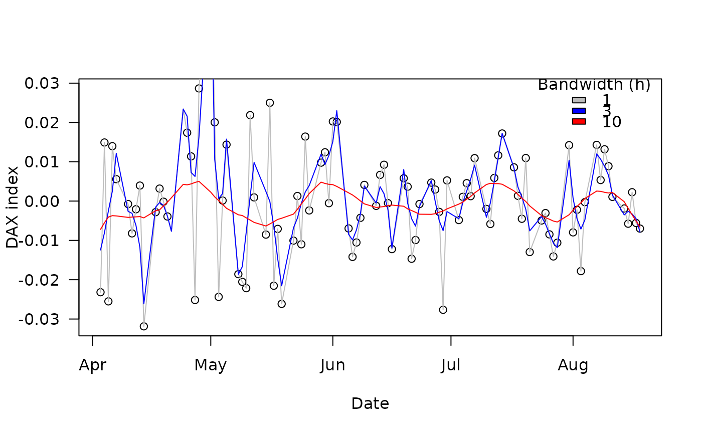
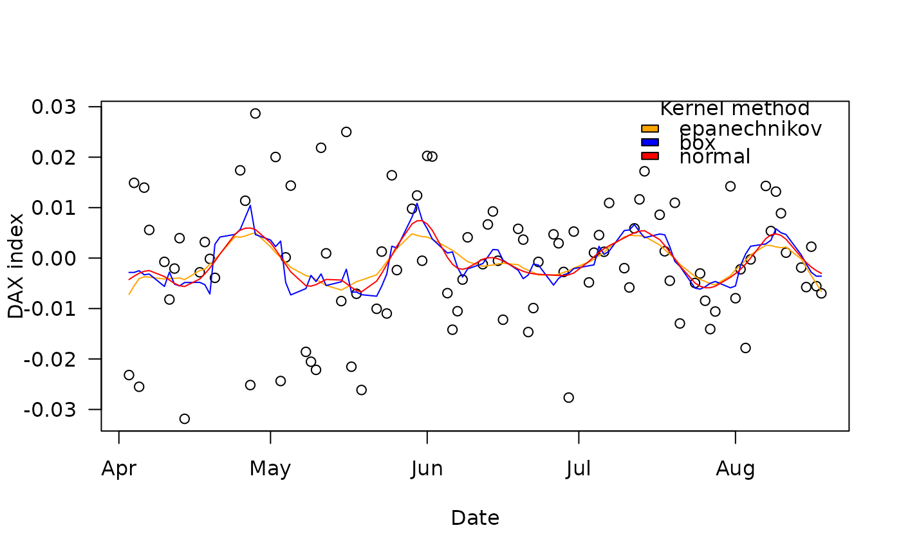

The function perform the smoothing of a time-series by non-parametric kernel regression.
Arguments
- x
a numeric vector of the series to be smoothed.
- t
a (numeric or Date) vector of time points. If missing, observations are considered to correspond to sequential time steps (i.e., 1, 2 ...).
- h
a scalar indicating the bandwidth used by the smoothing function.
- t.for.pred
a (numeric or Date) vector of time points at which to evaluate the smoothed fit. If missing,
tis used.- kernel
a character string indicating which kernel to use: "epanechnikov" (the default), "box", or "normal" (abbreviations also work).
- param_smoother
a list of additional parameters to provide to the internal smoothing function (see Details).
- output
a character string indicating if the output should be a "dataframe" (default) or a list (for faster computation when the function is called repeatedly).
Details
The function is essentially a wrapper that calls different underlying functions depending on the kernel that is selected:
lpridge::lpepa()for "epanechnikov".stats::ksmooth()for "normal" and "box". The argumentparam_smoothercan be used to pass additional arguments to these functions.
References
A short post we found useful: http://users.stat.umn.edu/~helwig/notes/smooth-notes.html
Examples
## Smooth 10 first values of a vector
kern_smooth(stockprice$DAX[1:20], h = 5)
#> t x
#> 1 1 -0.0142344629
#> 2 2 -0.0080248366
#> 3 3 -0.0043075061
#> 4 4 -0.0025564727
#> 5 5 -0.0013302414
#> 6 6 -0.0020000346
#> 7 7 -0.0037240350
#> 8 8 -0.0038831231
#> 9 9 -0.0052112887
#> 10 10 -0.0055894783
#> 11 11 -0.0051979756
#> 12 12 -0.0040618781
#> 13 13 -0.0007538746
#> 14 14 0.0021554236
#> 15 15 0.0022715116
#> 16 16 0.0037383564
#> 17 17 0.0048464190
#> 18 18 0.0063879240
#> 19 19 0.0073951470
#> 20 20 0.0089770700
## Prediction at time step 2 and 3
kern_smooth(stockprice$DAX, h = 1, t.for.pred = c(2, 3))
#> t x
#> 1 2 0.01490435
#> 2 3 -0.02550618
## Smoothing using a vector of dates for time
kern_smooth(x = stockprice$DAX[1:10], t = stockprice$DateID[1:10], h = 5)
#> t x
#> 1 2000-04-03 -0.0142344629
#> 2 2000-04-04 -0.0083542527
#> 3 2000-04-05 -0.0027355458
#> 4 2000-04-06 -0.0003472332
#> 5 2000-04-07 -0.0005866131
#> 6 2000-04-10 -0.0006515250
#> 7 2000-04-11 -0.0039680278
#> 8 2000-04-12 -0.0072967854
#> 9 2000-04-13 -0.0125126832
#> 10 2000-04-14 -0.0190363342
## Smoothing conserves original order
kern_smooth(x = stockprice$DAX[10:1], t = stockprice$DateID[10:1], h = 5)
#> t x
#> 1 2000-04-14 -0.0190363342
#> 2 2000-04-13 -0.0125126832
#> 3 2000-04-12 -0.0072967854
#> 4 2000-04-11 -0.0039680278
#> 5 2000-04-10 -0.0006515250
#> 6 2000-04-07 -0.0005866131
#> 7 2000-04-06 -0.0003472332
#> 8 2000-04-05 -0.0027355458
#> 9 2000-04-04 -0.0083542527
#> 10 2000-04-03 -0.0142344629
## Effect of the bandwidth
plot(stockprice$DAX[1:100] ~ stockprice$DateID[1:100],
las = 1, ylab = "DAX index", xlab = "Date")
points(kern_smooth(stockprice$DAX[1:100], stockprice$DateID[1:100], h = 1),
type = "l", col = "grey")
points(kern_smooth(stockprice$DAX[1:100], stockprice$DateID[1:100], h = 3),
type = "l", col = "blue")
points(kern_smooth(stockprice$DAX[1:100], stockprice$DateID[1:100], h = 10),
type = "l", col = "red")
legend("topright", fill = c("grey", "blue", "red"),
legend = c("1", "3", "10"), bty = "n", title = "Bandwidth (h)")

## Effect of the kernel
plot(stockprice$DAX[1:100] ~ stockprice$DateID[1:100],
las = 1, ylab = "DAX index", xlab = "Date")
points(kern_smooth(stockprice$DAX[1:100], stockprice$DateID[1:100], h = 10),
type = "l", col = "orange")
points(kern_smooth(stockprice$DAX[1:100], stockprice$DateID[1:100], h = 10, kernel = "box"),
type = "l", col = "blue")
points(kern_smooth(stockprice$DAX[1:100], stockprice$DateID[1:100], h = 10, kernel = "norm"),
type = "l", col = "red")
legend("topright", fill = c("orange", "blue", "red"),
legend = c("epanechnikov", "box", "normal"), bty = "n", title = "Kernel method")
